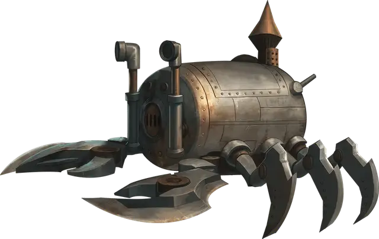

Аппарат Квалиша
Apparatus of Kwalish
Чудесный предмет, легендарный

Рекомендованная стоимость от 50 001 зм
На первый взгляд этот предмет выглядит как Большая запечатанная железная бочка, весящая 500 фунтов. У бочки есть потайной затвор, который можно найти успешной проверкой Интеллекта (Расследование) Сл 20. Этот затвор отпирает люк на одном конце бочки, позволяющий забраться внутрь двум существам Среднего или меньшего размера. У дальнего конца торчат в ряд десять рычагов, все в нейтральной позиции, но их можно перевести или в верхнее или в нижнее положение. Если использовать определённые рычаги, аппарат трансформируется и станет напоминать гигантского лобстера.
Аппарат Квалиша это Большой предмет со следующей статистикой:
Класс Доспеха: 20
Хиты: 200
Скорость: 30 футов, плавая 30 футов (или 0 футов если не выдвинуты ноги и хвост)
Иммунитет к урону: психическая энергия, яд
Для того чтобы использовать аппарат в качестве транспортного средства, требуется один водитель. Пока люк заперт, аппарат водо- и воздухонепроницаем. Воздуха внутри хватит одному дышащему существу на 10 часов. Аппарат держится на плаву. Он может погружаться на глубину до 900 футов. Глубже этой отметки аппарат получает дробящий урон 2к6 в минуту от давления.
Существо в аппарате может действием переместить от одного до двух рычагов вверх или вниз. После каждого использования рычаги сами возвращаются в нейтральное положение. Назначение десяти рычагов показано в таблице справа.
| Рычаг | Вверх | Вниз |
| 1 | Ноги и хвост выдвигаются, позволяя аппарату ходить и плавать. | Ноги и хвост втягиваются, уменьшая скорость аппарата до 0 и лишая его способности получать преимущества от бонусов к скорости. |
| 2 | Заслонка переднего иллюминатора открывается. | Заслонка переднего иллюминатора закрывается. |
| 3 | Заслонки боковых иллюминаторов (по два на каждом борту) открываются. | Заслонки боковых иллюминаторов (по два на каждом борту) закрываются. |
| 4 | Из передней части аппарата выдвигаются два когтя. | Когти убираются. |
| 5 | Каждый выдвинутый коготь совершает рукопашную атаку оружием: +8 к попаданию, досягаемость 5 футов, одна цель. Попадание: 7 (2к6) дробящего урона. | Каждый выдвинутый коготь совершает рукопашную атаку оружием: +8 к попаданию, досягаемость 5 футов, одна цель. Попадание: цель становится схваченной (Сл высвобождения 15). |
| 6 | Аппарат идёт или плывёт вперёд. | Аппарат идёт или плывёт назад. |
| 7 | Аппарат поворачивает на 90 градусов налево. | Аппарат поворачивает на 90 градусов направо. |
| 8 | Похожие на глаза приспособления испускают яркий свет в пределах 30-футового радиуса и тусклый свет в пределах ещё 30 футов | Свет тухнет. |
| 9 | Аппарат погружается в жидкость на глубину до 20 футов | Аппарат всплывает в жидкости не более чем на 20 футов |
| 10 | Задний люк отпирается и открывается. | Задний люк закрывается и запирается. |